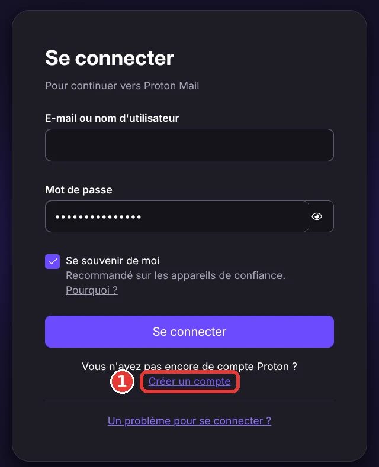
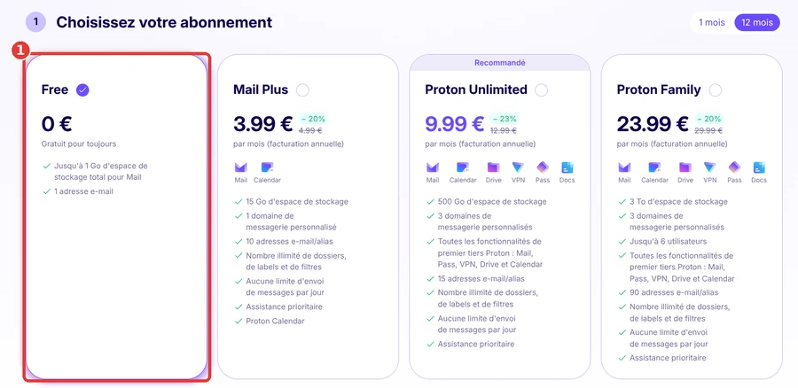
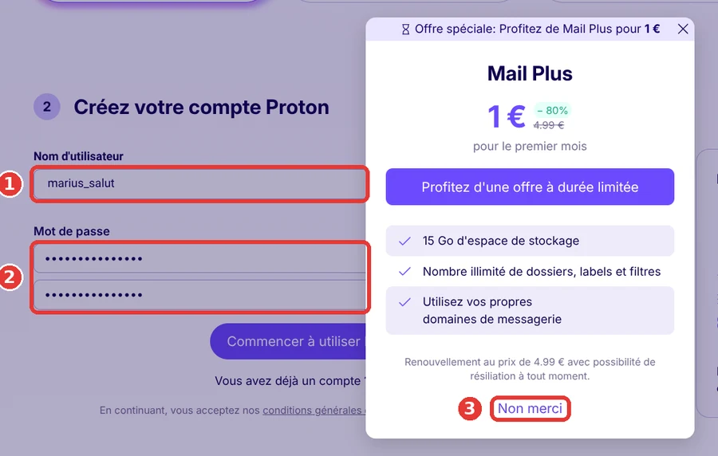
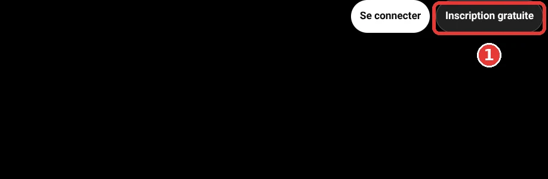
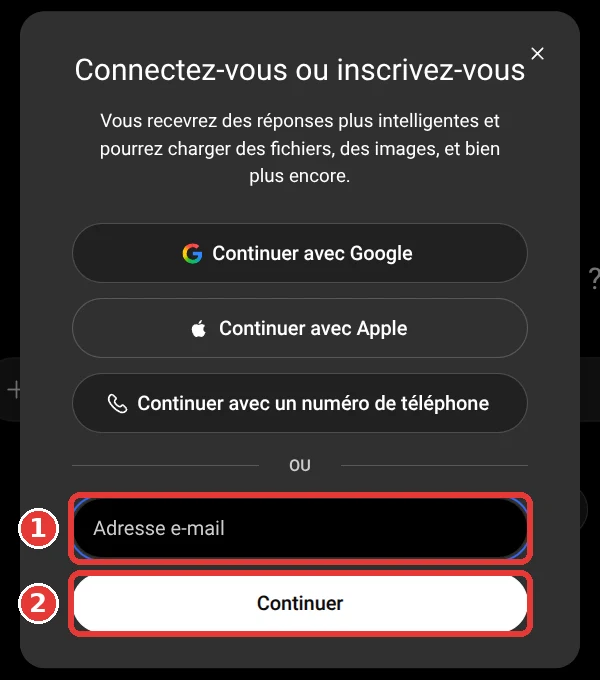
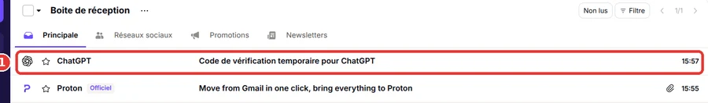
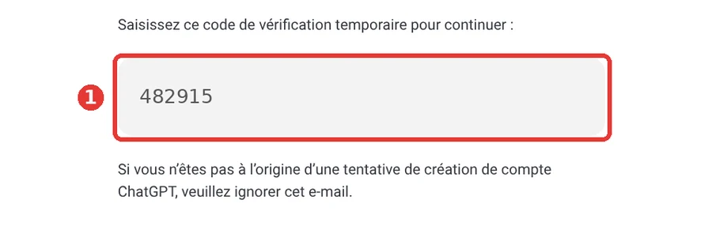
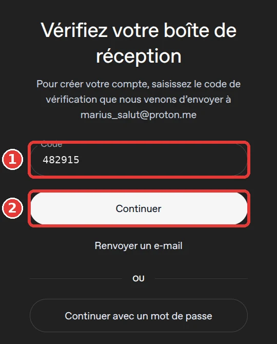

Créer un compte ChatGPT avec Proton Mail
Pour créer un compte ChatGPT, il faut une adresse e-mail. On va d'abord t'en créer une gratuite avec Proton Mail (partie 1), puis créer ton compte ChatGPT (partie 2). Suis chaque étape dans l'ordre : les cadres rouges numérotés sur les images montrent où cliquer.
Partie 1 : créer ton adresse e-mail Proton Mail
-
Ouvre Proton Mail et clique sur « Créer un compte »
Clique sur le bouton ci-dessous : la page de connexion s'ouvre dans un nouvel onglet.
Ouvrir Proton MailSous le bouton « Se connecter », clique sur le lien « Créer un compte » (cadre rouge n°1).

-
Choisis l'abonnement gratuit
Tu arrives sur la page « Choisissez votre abonnement ». Garde l'offre « Free » (0 €) : c'est la première, déjà cochée (cadre rouge n°1). Tu n'as rien à payer. Ensuite, descends dans la page avec la molette de la souris jusqu'à « Créez votre compte Proton ».

-
Remplis le formulaire
1. Dans « Nom d'utilisateur », écris le nom que tu veux. Ce sera le début de ton adresse e-mail (par exemple « monnom » donnera « monnom@proton.me »).
2. Dans « Mot de passe », choisis un mot de passe long et écris-le une deuxième fois dans le champ du dessous. Note-le quelque part : tu en auras besoin pour te reconnecter.
3. Clique sur le bouton « Commencer à utiliser Proton Mail ». Si une fenêtre « Offre spéciale » s'affiche, clique sur « Non merci » (cadre rouge n°3) : tu restes gratuit.

Proton peut aussi te demander de prouver que tu n'es pas un robot (un petit puzzle ou un code) ou de proposer une adresse de récupération : suis simplement les indications à l'écran.
-
Ta boîte e-mail est prête
Quand tu vois ta boîte de réception Proton Mail, c'est gagné. Ton adresse e-mail est ton nom d'utilisateur suivi de « @proton.me ». Garde cet onglet Proton Mail ouvert, on va en avoir besoin.
Partie 2 : créer ton compte ChatGPT
-
Ouvre ChatGPT et clique sur « Inscription gratuite »
Clique sur le bouton ci-dessous : ChatGPT s'ouvre dans un nouvel onglet.
Ouvrir ChatGPTEn haut à droite de la page, clique sur « Inscription gratuite » (cadre rouge n°1).

-
Écris ton adresse e-mail Proton
Une fenêtre s'ouvre. Clique dans la case « Adresse e-mail » (cadre n°1), écris l'adresse que tu viens de créer (par exemple monnom@proton.me), puis clique sur le bouton blanc « Continuer » (cadre n°2).

Si ChatGPT te propose de créer un mot de passe, fais-le et note-le. Sinon, il va t'envoyer un code par e-mail : passe à l'étape suivante.
-
Va chercher le code dans Proton Mail
ChatGPT affiche « Vérifiez votre boîte de réception » : laisse cet onglet ouvert. Retourne sur l'onglet Proton Mail (ou rouvre-le avec le bouton de la partie 1). Après quelques secondes, un message « Code de vérification temporaire pour ChatGPT » apparaît : clique dessus (cadre rouge n°1).

Il n'arrive pas ? Attends une minute, vérifie les onglets « Réseaux sociaux » et « Promotions » au-dessus de la liste, ou reviens sur ChatGPT et clique sur « Renvoyer un e-mail ».
-
Repère le code à 6 chiffres
Dans le message, le code est écrit dans le grand rectangle gris (cadre rouge n°1). Retiens-le ou copie-le (double-clic dessus, puis Ctrl + C, ou Cmd + C sur Mac).

Sur les images de ce tuto, le code est un faux, pour protéger le compte. Le tien sera différent. Ne le montre jamais à personne.
-
Écris le code dans ChatGPT
Reviens sur l'onglet ChatGPT. Clique dans la case « Code » (cadre n°1), écris les 6 chiffres (ou colle-les avec Ctrl + V, ou Cmd + V sur Mac), puis clique sur « Continuer » (cadre n°2).

-
Indique ton nom et ta date de naissance
ChatGPT te demande ensuite ton nom et ta vraie date de naissance. Remplis les cases, puis clique sur le bouton pour continuer. Ton compte est créé : tu peux écrire ta première question.
ChatGPT demande ta vraie date de naissance, entre-la honnêtement. D'après les conditions d'utilisation d'OpenAI, le service est réservé aux personnes d'au moins 13 ans, et l'accord d'un parent ou d'un tuteur est nécessaire avant 18 ans. Vérifie ces conditions sur le site de ChatGPT.